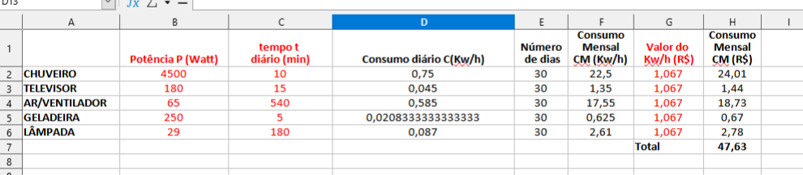

Trabalho
Matematica
Língua português
REDAÇÃO
De acordo, com o quadro acima, foram retirados dados quatro itens; Chuveiro, televisor, geladeira e lâmpada.
O primeiro é o chuveiro com a potência de 4.500(watts),tempo e de 10mim, consumo mensal de 22,5 e de 24,oo. O segundo é o televisor, com a potência de 180(watts),tempo de 15mim, consumo mensal em (km/h) e de 1,35 e o consumo de R$ e de 1,44. O terceiro é a geladeira com a potência de 250(watts), tempo de 5mim, consumo mensal em (km/h) e de 0,625 e de R$ e de 0,67. O quarto e a lâmpada com a potência de 29(watts) tempo e de 180mim,consumo mensal (km/h) é de 2,61 e o consumo de R$2,70.Ferramentas de desenho

página inicial Voltar para página inicial